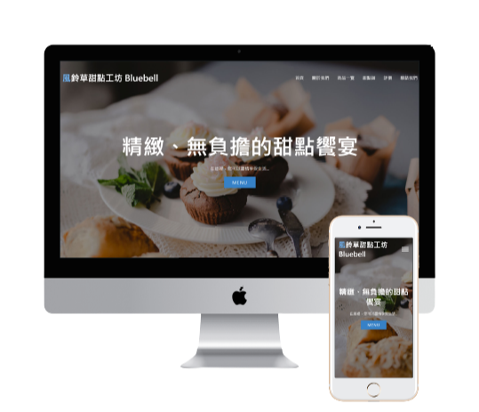

John Hsu
John Hsu
風鈴草甜點工坊 (RWD 網頁切版 / 一頁式)

使用工具與技能 : VS Code | HTML | CSS (Flex)
手刻一頁式靜態網頁切版
RWD 響應式網頁
簡介 :
風鈴草甜點工坊網站為個人練習專案之一，構想是製作一個一頁式的
咖啡店介紹網站，並讓使用者能夠快速獲得所需資訊。
製作流程 :
會先以 Photoshop 處理圖片與規劃大略的版型，
再以 HTML 架構與 CSS Flex 排版手刻切版出整個網頁版面。